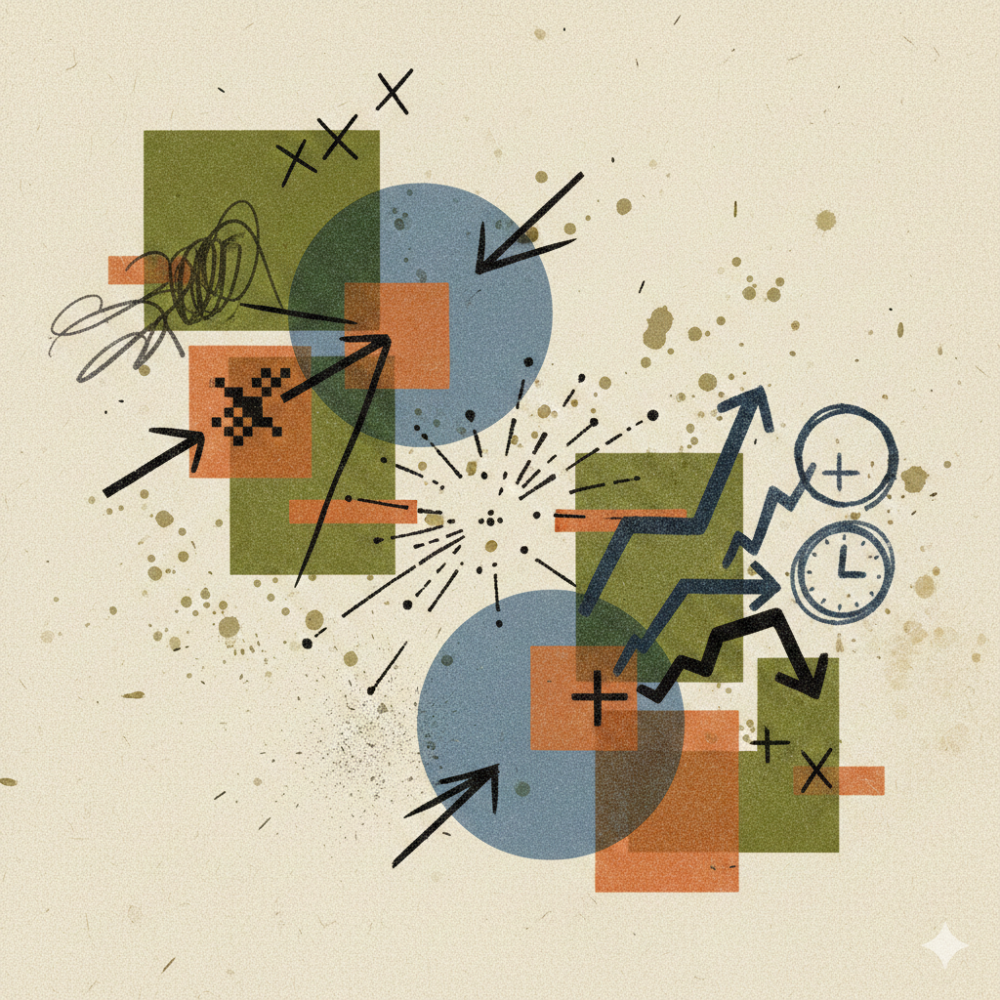

 Image by Gemini
I automated Sentinel ticket management with two browser bookmarks. One assigns the incident to me. The other closes it, prompting for a closing comment and handling the status change, classification, and save in one click.
That's not the interesting part. The interesting part is why I had to build them at all.
The click tax
Closing a ticket in Microsoft Sentinel is not hard. It's just slow. You click to assign, wait for the page to update, click to change status, wait again, click to open the comments field, type your note, click to save, click to confirm. Multiply that by every ticket, every shift, every analyst on the team. After hours of doing this, it gets frustrating.
None of those clicks are analysis. They're ceremony. The platform needs you to navigate its UI the way it was designed, not the way the work actually flows. And because each individual click takes only a few seconds, nobody measures the cumulative cost.
I started paying attention to how much of my shift was spent on mechanical interaction versus actual investigation. The ratio was worse than I expected. If closing a ticket takes 30 seconds of clicking and waiting, and an analyst closes 40 tickets per shift, that's 20 minutes per analyst per day spent on clicks alone. Scale that across a team of five analysts and you're losing over an hour and a half of combined analyst time every day. Not on analysis. On UI navigation.
Why vendor UX gets away with this
Security tool vendors design for feature completeness, not analyst workflow. They ship capabilities and check boxes on procurement checklists. "Can it do X?" Yes. "Does doing X feel like pulling teeth?" That never gets asked, despite analysts complaining about it constantly.
The result is platforms that technically do everything but make the common paths friction-heavy. The 80% case (triage, assign, close with a note) gets the same number of clicks as the 5% case (complex multi-step investigation). There's no fast path for the boring stuff.
SOC leaders don't push back on this because analyst activity looks like productivity from the outside. If the analyst is clicking through Sentinel, they look busy. The fact that half those clicks are navigational overhead, not investigative decisions, is invisible unless you measure it.
The bookmarklets
I have two bookmarklets. The assign one is trivial, so I'll share the closing script since it has more steps. The analyst clicks on an incident ticket first to open it, then clicks the bookmark:
javascript:(function(){
/* Opens the status change dialog */
document.getElementsByClassName(
"ext-details-header-item fxs-fxclick ext-dialog-target-caseStatus"
)[0].click();
setTimeout(function(){
var mouseup_event = document.createEvent("MouseEvents");
mouseup_event.initEvent("mouseup", true, true);
var change_event = document.createEvent("HTMLEvents");
change_event.initEvent("change", true, true);
var dialog = document.getElementsByClassName("fxs-messagebox")[0];
/* Selects "Closed" from the status list */
dialog.getElementsByClassName("fxc-listView-itemcontent")[2].click();
/* Prompts for closing reason and fills the textarea */
var text_area = dialog.getElementsByClassName(
"azc-textarea azc-formControl azc-input azc-validation-border "
+ "msportalfx-tooltip-overflow msportalfx-font-regular"
)[0];
var reason = prompt("Closing reason", "");
text_area.value = reason;
text_area.dispatchEvent(change_event);
/* Opens the classification dropdown, defaults to False Positive */
dialog.getElementsByClassName(
"azc-formControl azc-input fxc-dropdown-open "
+ "msportalfx-tooltip-overflow azc-validation-border fxc-dropdown-input"
)[0].dispatchEvent(mouseup_event);
var classifications = dialog.getElementsByClassName(
"fxc-dropdown-option msportalfx-tooltip-overflow fxs-portal-hover"
);
var pick = prompt("Classification (1-4)", "2");
classifications[parseInt(pick) - 1].dispatchEvent(mouseup_event);
/* Clicks OK after a delay */
setTimeout(function(){
dialog.getElementsByClassName(
"fxc-base fxc-simplebutton"
)[0].click();
}, 1000);
}, 1000);
})();
To use as a bookmarklet, collapse this to a single line and save it as the URL of a browser bookmark.
It's not sophisticated. There's no API calls, no network access, no external dependencies. It opens the status dialog, selects "Closed", prompts me for a reason and classification, then clicks OK. The same thing I was doing manually, just without the clicking around. The setTimeout calls are ugly but necessary because the portal renders asynchronously.
One caveat though. If Microsoft changes Sentinel's layout or element structure (which they do), the script breaks. So you want someone on the team who can fix it. Thankfully, the script is simple enough that updating a selector takes a few minutes.
The fact that a bookmark can replace a workflow that takes an analyst 30+ seconds per ticket should raise questions about a platform that costs six figures annually.
If I could have my way
Honestly, I'd skip the Sentinel UI entirely. The Azure CLI has az sentinel incident commands that can assign, update status, and close incidents from the command line. You could build a simple custom interface on top of that, one you control, designed around the actual triage workflow instead of Microsoft's general-purpose portal.
That's the next iteration. A lightweight tool that takes incident ID, closing comment, and classification, then calls the API directly. No clicking through five screens. No waiting for the portal to render.
Take it one step further and you could wire an AI agent into the same API. It reads the incident details, drafts a closing comment based on the alert context, and the analyst just approves or edits before it closes the ticket. The mechanical part disappears and the analyst only shows up for the judgment call. We're not far from that being practical.
What this actually means
Analysts do complain. They feel the frustration. But they don't always recognize that the small delays and UI friction compound over a shift. Each click feels minor. The accumulation is what's invisible. Couple that with the pressure of daily SOC life, the queue that never empties, the alerts that keep coming, and nobody stops to ask whether the tool itself is part of the problem. Managers don't measure it because the analyst appears productive. Vendors don't fix it because nobody quantifies it.
What this means in practice is that SOC teams are burning analyst capacity on UI navigation that could be eliminated with better workflow design, or in my case, with 40 lines of JavaScript. If you manage a SOC, try timing how long it takes an analyst to close a straightforward true-positive ticket from start to finish. Then ask how much of that time was thinking versus clicking. The gap is the tax you're paying.
I'm not arguing that everyone should run bookmarklets against their SIEM. I'm saying that if a bookmarklet noticeably speeds up your day, something is wrong with the tool. The tools we accept as "good enough" have a real, unmeasured cost.
If you manage a team, measure it. If you build these tools, watch an analyst use your product for an hour without saying anything. Count the clicks.